| Name | Description | Year | Unit | Source |
|---|---|---|---|---|
| BIO_AREA_HA_2024 | area of land cultivated as organic farming | 2024 | ha | Cartobio |
| PROT_AREA_HA_2026 | Area under protection (National parks, ZNIEFF, Natura 2000 etc.) | 2026 | ha | WDPA |
| HVE_N_2024 | number of ‘high environmental certified’ | 2024 | NA | MASA |
| GREENSUBS_N_2022 | number of green subventions received per commune | 2022 | NA | Telepac |
| GREENSUBS_kEUR_per_HA_2022 | subsidies per cultivated area | 2022 | kEUR/ha | Telepac |
| PESTICIDE_EXPOSURE_2022 | Combined exposure in toxic, carcinogenic, mutagenic, reprotoxic active substances from the scaled concentrations in air and water and treatment intensity index, designed to vary between 0 and 3 (historical data between 0 and 1.5) | 2022 | NA | Rigal and Perrot 2025 |
| CROP_DIV_SHANNON_2023 | Shannon index calculated with all RPG classes | 2023 | NA | RPG |
| CULTIVATED_AREA_PCT_2023 | percentage of area cultivated (over the area of spatial unit) | 2023 | % | RPG |
| FALLOW_AREA_HA_2023 | Area with fallow (code J5M, J6P, J6S, JAC, and JNO in RPG) | 2023 | ha | RPG |
| CROPROT_N_CULT_1523 | Average number of different crops in 2015-2023 (max = 9) | 2015-2023 | NA | RPG successions |
| CROPROT_N_MAX_1523 | Nomber of occurrences of the dominant crop | 2015-2023 | NA | RPG successions |
| CROPROT_N_PT_1523 | Number of fallow in the crop rotations | 2015-2023 | NA | RPG successions |
A multivariate approach
Objective
The idea is to use make a PCA over political stringency indicators to understand what are the main political stringency “axis” i.e. the main differences among communes in political stringency indicators across France?
Background information
Variables
Remove outliers
Code
# remove NAs and remove Corsica
keep <- complete.cases(ind) & dfI$INSEE_REG != 94
indF <- ind[keep, ]
df <- dfI[keep, ]
iqr_var <- apply(indF, 2, sd)
med_var <- apply(indF, 2, mean)
low_th <- med_var - iqr_var * 5
high_th <- med_var + iqr_var * 5
out <- t(t(indF) < low_th | t(indF) > high_th)
# apply(out, 2, sum)
# table(apply(out, 1, any))
rm_outlier <- apply(out, 1, any)
# table(keep)
indF <- indF[!rm_outlier, ]
df <- df[!rm_outlier, ]
shp <- shp[match(df$INSEE_COM, shp$INSEE_COM)]We decided to remove:
- municipalities with missing values on the indicators (N=
2899) - Corsica municipalities (N=
360) - outliers identified as \(mean ± 5 * sd\) (N =
747)
At the end, we have a table made of 31043 municipalities and 12 variables.
Code
par(mar = c(14, 4, 1, 1))
boxplot(
scale(indF),
las = 2,
main = "no outliers"
)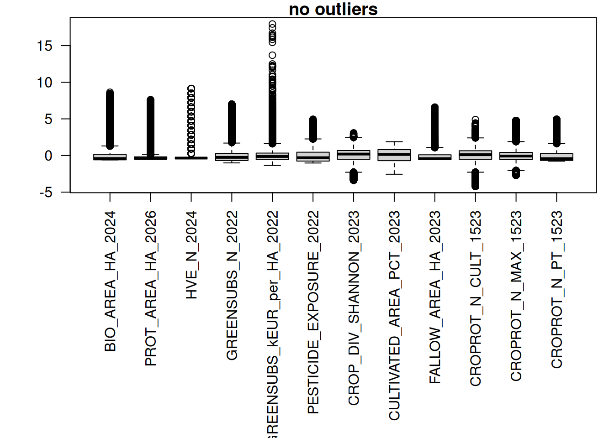
Code
par(mar = c(14, 4, 1, 1))
boxplot(
scale(apply(indF, 2, sqrt)),
las = 2,
main = "sqrt - no outliers"
)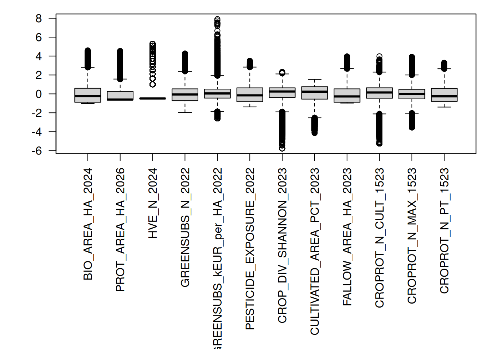
Code
par(mar = c(14, 4, 1, 1))
boxplot(
scale(apply(indF, 2, log1p)),
las = 2,
main = "log - no outliers"
)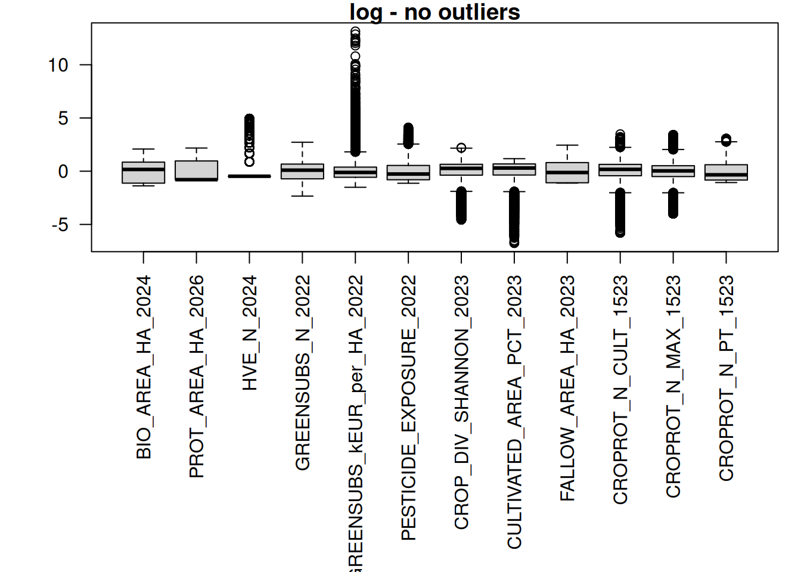
Code
par(mar = c(14, 4, 1, 1))
boxplot(
scale(apply(ind, 2, sqrt)),
las = 2,
main = "sqrt - with outliers",
)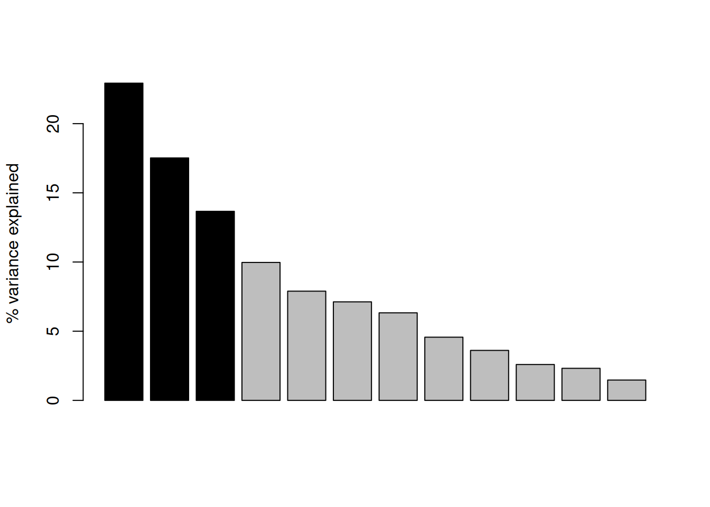
Correlation
Code
# names(ind) <- sapply(strsplit(names(ind), "_"), function(x) {
# paste(x[1], x[2], sep = "\n")
# })
# pairs(ind, lower.panel = panel.smooth.max, upper.panel = panel.cor)
corrplot::corrplot(
cor(indF, method = "spearman"),
method = 'number',
type = 'upper',
diag = FALSE
)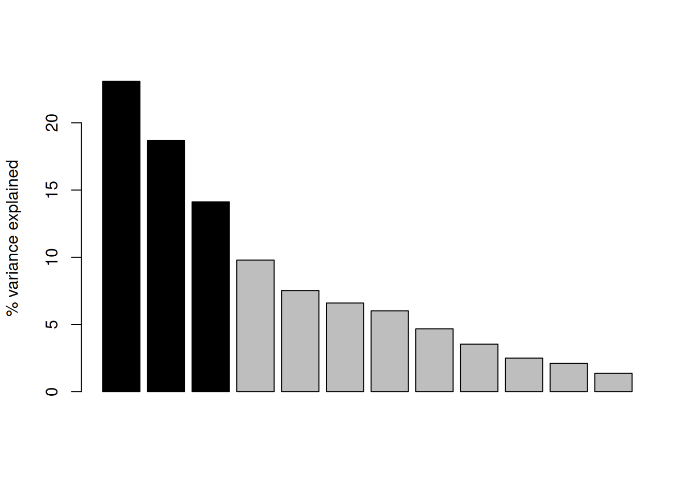
Principal Component Analysis
Code
pca1 <- ade4::dudi.pca(
indF,
scannf = FALSE,
nf = 4
)
barplot(
pca1$eig / sum(pca1$eig) * 100,
ylab = "% variance explained",
col = c(rep("black", 3), rep("grey", ncol(indF) - 3))
)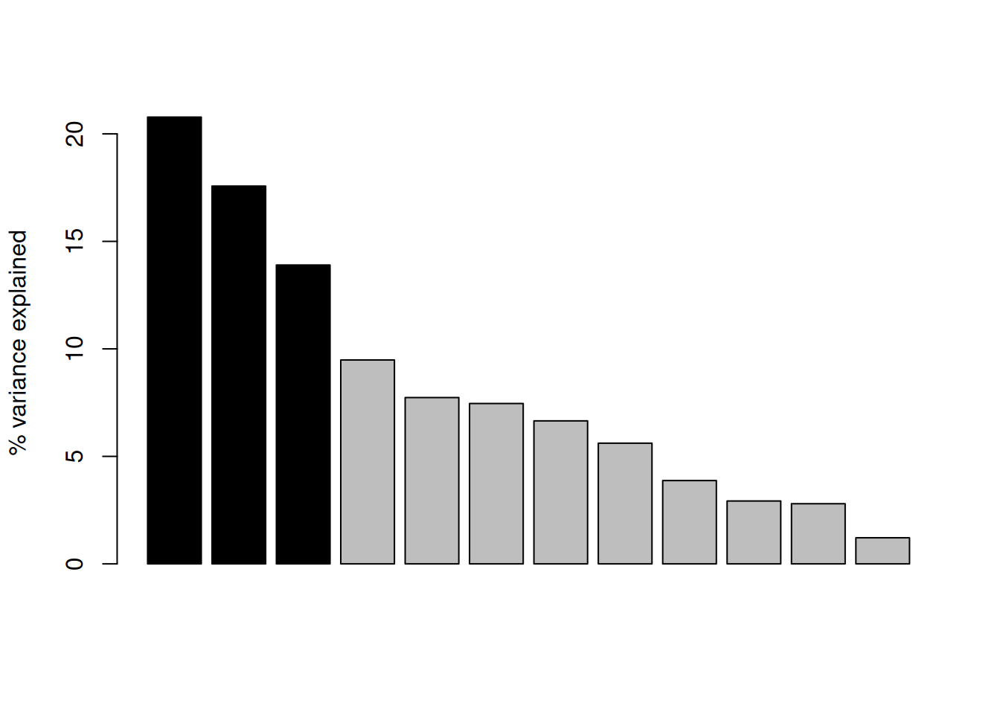
Code
ade4::s.class(pca1$li, as.factor(df$INSEE_REG), col = rainbow(13))
ade4::s.arrow(pca1$co * 5, add.plot = TRUE)
mtext(
text = paste0("PC1 - ", round(pca1$eig[1] / sum(pca1$eig) * 100), "%"),
side = 1,
line = 3
)
mtext(
text = paste0("PC2 - ", round(pca1$eig[2] / sum(pca1$eig) * 100), "%"),
side = 2,
line = 3
)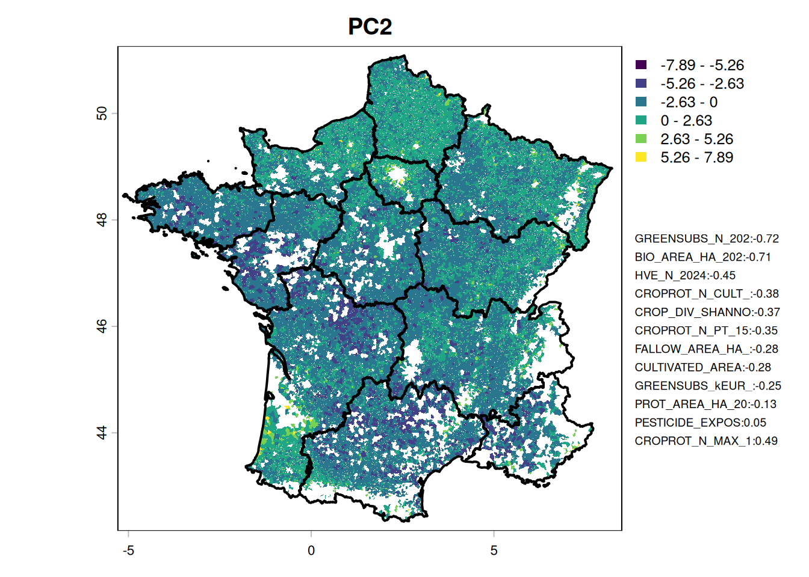
Code
ade4::s.class(
pca1$li,
as.factor(df$INSEE_REG),
col = rainbow(13),
xax = 1,
yax = 3
)
ade4::s.arrow(pca1$co * 5, add.plot = TRUE, xax = 1, yax = 3)
mtext(
text = paste0("PC1 - ", round(pca1$eig[1] / sum(pca1$eig) * 100), "%"),
side = 1,
line = 3
)
mtext(
text = paste0("PC3 - ", round(pca1$eig[3] / sum(pca1$eig) * 100), "%"),
side = 2,
line = 3
)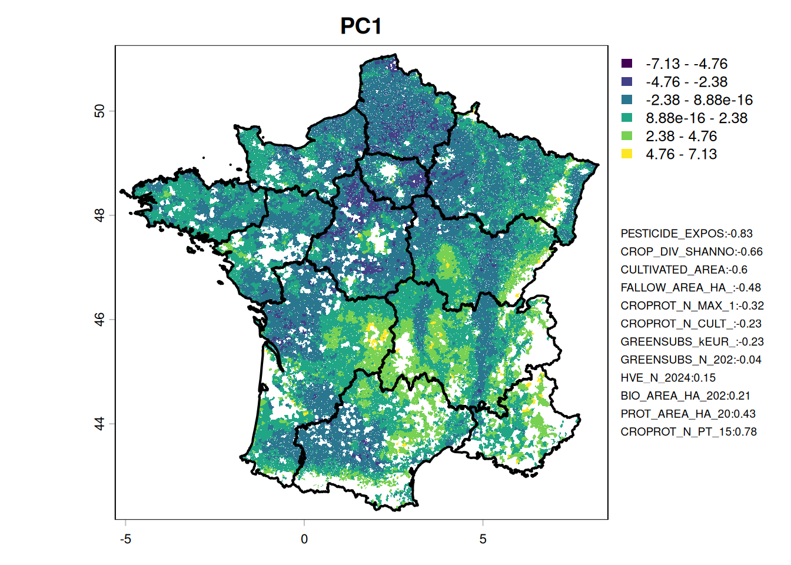
Maps
Code
minmax1 <- max(abs(pca1$li[, 1]))
shp$PC1 <- pca1$li[, 1]
# PC1
terra::plot(
shp,
"PC1",
main = "PC1",
border = NA,
breaks = seq(-minmax1, minmax1, length.out = 7)
)
terra::plot(reg, add = TRUE, lwd = 2)
od1 <- order(pca1$co[, 1])
load1 <- paste(shortname[od1], round(pca1$co[od1, 1], 2), sep = ":")
legend(8.3, 48, load1, xpd = NA, bty = "n", cex = 0.6)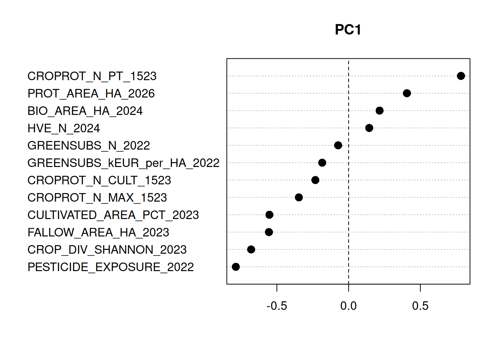
Code
minmax2 <- max(abs(pca1$li[, 2]))
shp$PC2 <- pca1$li[, 2]
# PC2
terra::plot(
shp,
"PC2",
main = "PC2",
border = NA,
breaks = seq(-minmax2, minmax2, length.out = 7)
)
terra::plot(reg, add = TRUE, lwd = 2)
od2 <- order(pca1$co[, 2])
load2 <- paste(shortname[od2], round(pca1$co[od2, 2], 2), sep = ":")
legend(8.3, 48, load2, xpd = NA, bty = "n", cex = 0.6)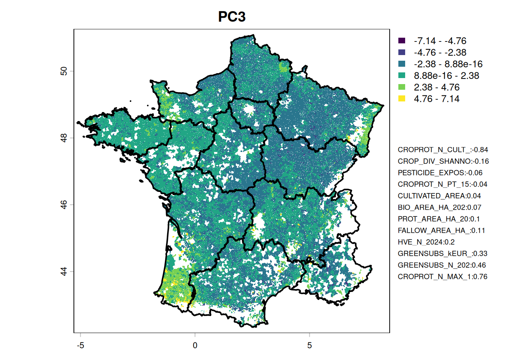
Code
minmax3 <- max(abs(pca1$li[, 3]))
shp$PC3 <- pca1$li[, 3]
# PC2
terra::plot(
shp,
"PC3",
main = "PC3",
border = NA,
breaks = seq(-minmax3, minmax3, length.out = 7)
)
terra::plot(reg, add = TRUE, lwd = 2)
od3 <- order(pca1$co[, 3])
load3 <- paste(shortname[od3], round(pca1$co[od3, 3], 2), sep = ":")
legend(8.3, 48, load3, xpd = NA, bty = "n", cex = 0.6)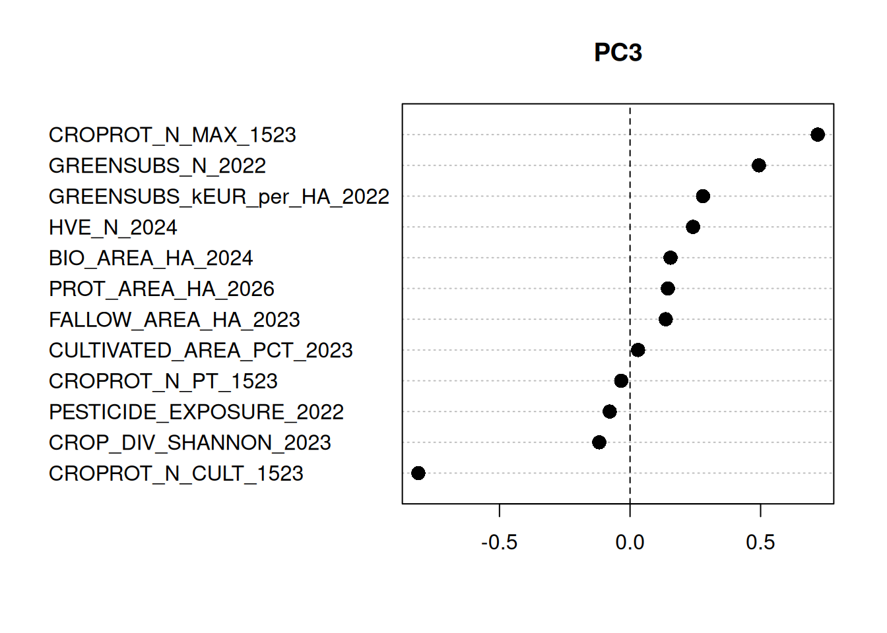
Loadings
Code
ord1 <- order(pca1$co[, 1])
dotchart(
pca1$co[ord1, 1],
pch = 16,
pt.cex = 1.5,
labels = row.names(pca1$co)[ord1],
main = "PC1"
)
abline(v = 0, lty = 2)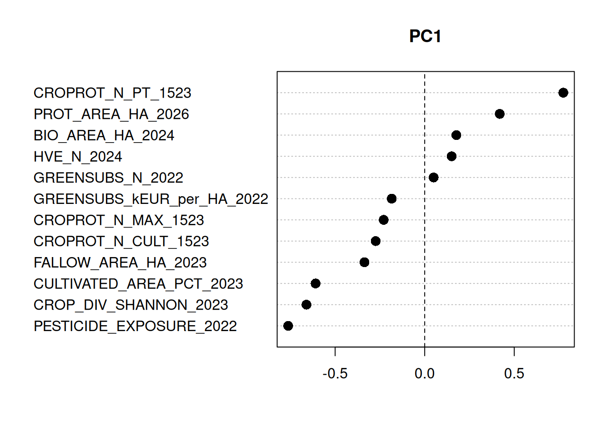
Code
ord2 <- order(pca1$co[, 2])
dotchart(
pca1$co[ord2, 2],
pch = 16,
pt.cex = 1.5,
labels = row.names(pca1$co)[ord2],
main = "PC2"
)
abline(v = 0, lty = 2)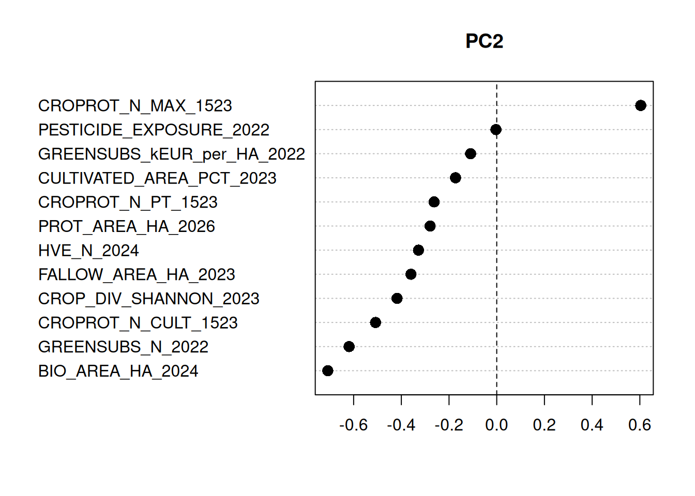
Code
ord3 <- order(pca1$co[, 3])
dotchart(
pca1$co[ord3, 3],
pch = 16,
pt.cex = 1.5,
labels = row.names(pca1$co)[ord3],
main = "PC3"
)
abline(v = 0, lty = 2)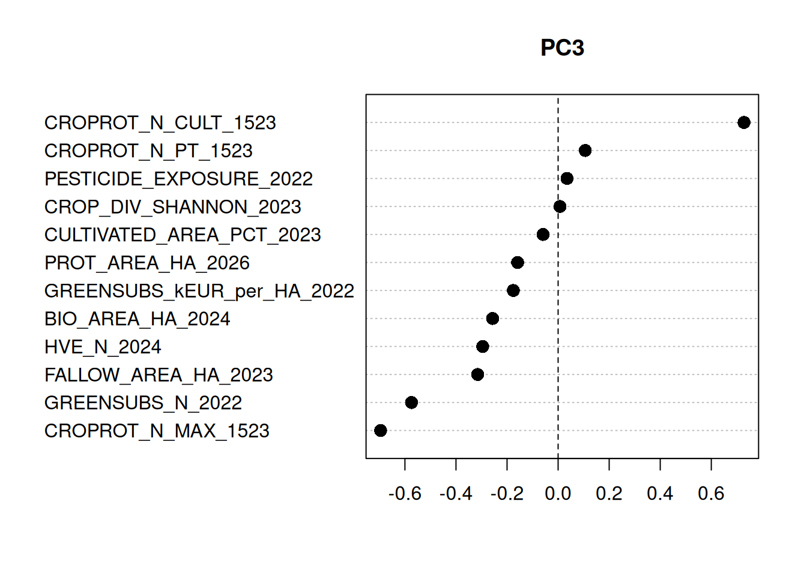
Code
knitr::kable(round(pca1$co[, 1:3], 2), row.names = TRUE)| Comp1 | Comp2 | Comp3 | |
|---|---|---|---|
| BIO_AREA_HA_2024 | 0.18 | -0.71 | -0.26 |
| PROT_AREA_HA_2026 | 0.42 | -0.28 | -0.16 |
| HVE_N_2024 | 0.15 | -0.33 | -0.30 |
| GREENSUBS_N_2022 | 0.05 | -0.62 | -0.57 |
| GREENSUBS_kEUR_per_HA_2022 | -0.18 | -0.11 | -0.18 |
| PESTICIDE_EXPOSURE_2022 | -0.76 | 0.00 | 0.04 |
| CROP_DIV_SHANNON_2023 | -0.66 | -0.42 | 0.01 |
| CULTIVATED_AREA_PCT_2023 | -0.61 | -0.17 | -0.06 |
| FALLOW_AREA_HA_2023 | -0.34 | -0.36 | -0.31 |
| CROPROT_N_CULT_1523 | -0.27 | -0.51 | 0.73 |
| CROPROT_N_MAX_1523 | -0.23 | 0.60 | -0.70 |
| CROPROT_N_PT_1523 | 0.77 | -0.26 | 0.11 |
Merged map
Code
minmax <- max(abs(pca1$li[, 1:3]))
pp <- (((pca1$li[, 1:3] / minmax) + 1) / 2)
colrgb <- rgb(pp[, 1], pp[, 2], pp[, 3], alpha = 1)
terra::plot(
shp,
col = colrgb,
main = "RGB",
border = NA
)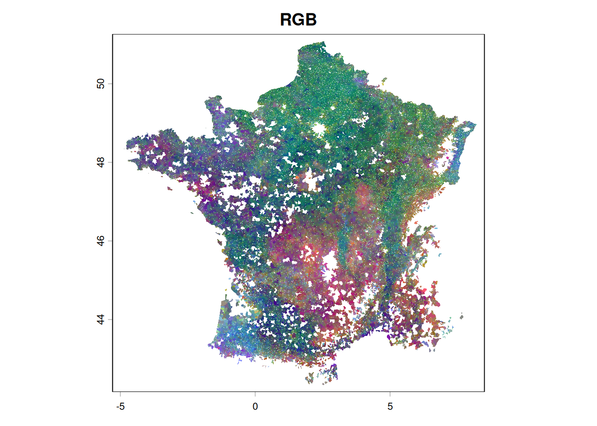
Code
# Legend
Ternary::TernaryPlot(
alab = "PC1 \u2192",
blab = "\u2190 PC2",
clab = "PC3 \u2192",
lab.col = c("red", "darkgreen", "blue"),
main = "RGB", # Title
point = "right",
lab.cex = 0.8,
grid.minor.lines = 0,
grid.lty = "solid",
col = rgb(0.9, 0.9, 0.9),
grid.col = "white",
axis.col = rgb(0.6, 0.6, 0.6),
ticks.col = rgb(0.6, 0.6, 0.6),
axis.rotate = FALSE,
padding = 0.08,
axis.labels = round(seq(-minmax, minmax, length.out = 11), 1)
)
# Colour the background:
cols <- Ternary::TernaryPointValues(rgb)
Ternary::ColourTernary(cols, spectrum = NULL)
# Add the data to the plot
Ternary::AddToTernary(graphics::points, pp, pch = ".")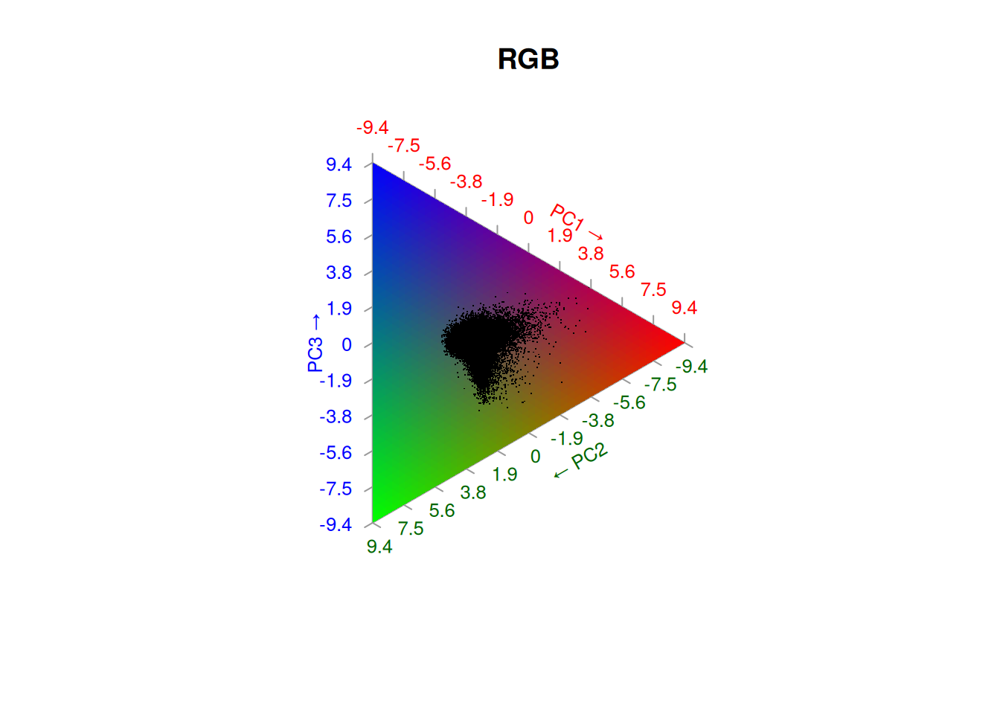
Code
scale01 <- function(x) {
(x - min(x, na.rm = TRUE)) / (max(x, na.rm = TRUE) - min(x, na.rm = TRUE))
}
pp <- apply(pca1$li[, 1:3], 2, scale01)
colrgb <- rgb(pp[, 1], pp[, 2], pp[, 3], alpha = 1)
terra::plot(
shp,
col = colrgb,
main = "RGB",
border = NA
)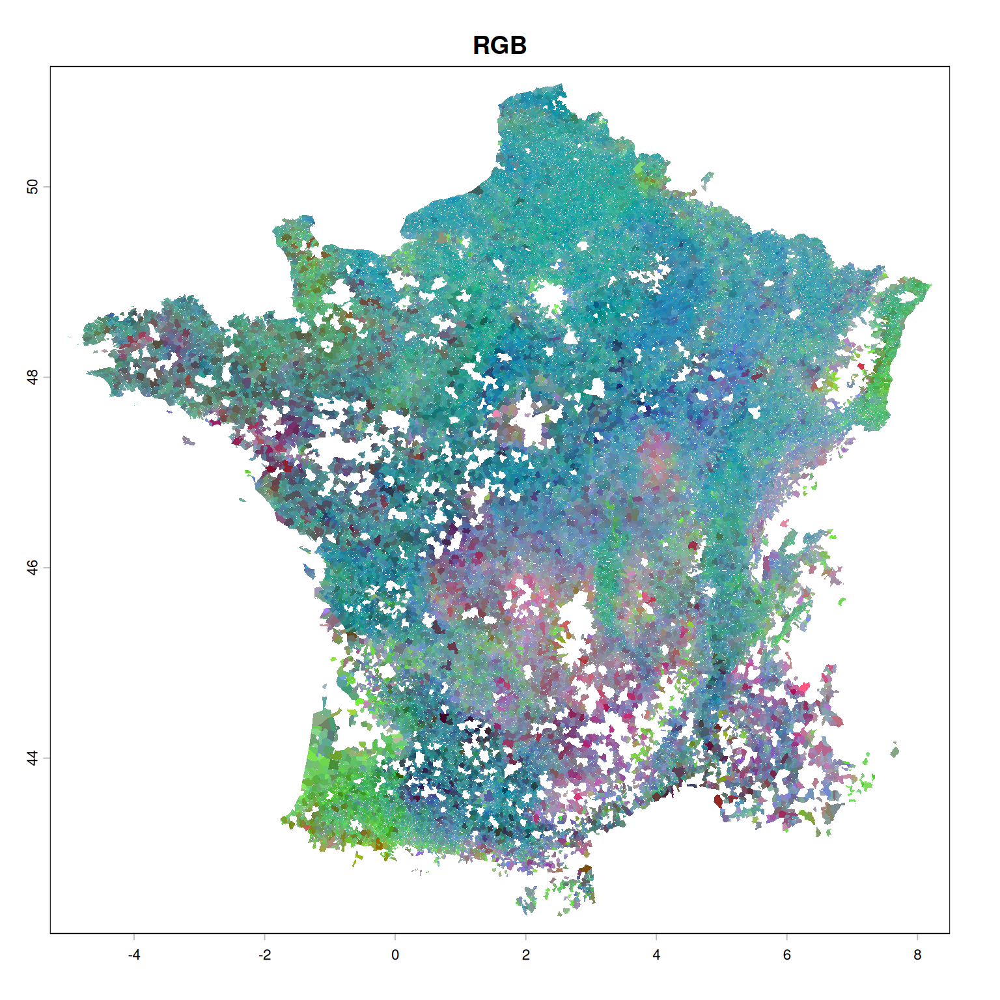
Code
# Legend
Ternary::TernaryPlot(
alab = "PC1 \u2192",
blab = "\u2190 PC2",
clab = "PC3 \u2192",
lab.col = c("red", "darkgreen", "blue"),
main = "RGB", # Title
point = "right",
lab.cex = 0.8,
grid.minor.lines = 0,
grid.lty = "solid",
col = rgb(0.9, 0.9, 0.9),
grid.col = "white",
axis.col = rgb(0.6, 0.6, 0.6),
ticks.col = rgb(0.6, 0.6, 0.6),
axis.rotate = FALSE,
padding = 0.08,
axis.labels = c("low", rep("", 9), "high")
)
# Colour the background:
cols <- Ternary::TernaryPointValues(rgb)
Ternary::ColourTernary(cols, spectrum = NULL)
# Add the data to the plot
Ternary::AddToTernary(graphics::points, pp, pch = ".")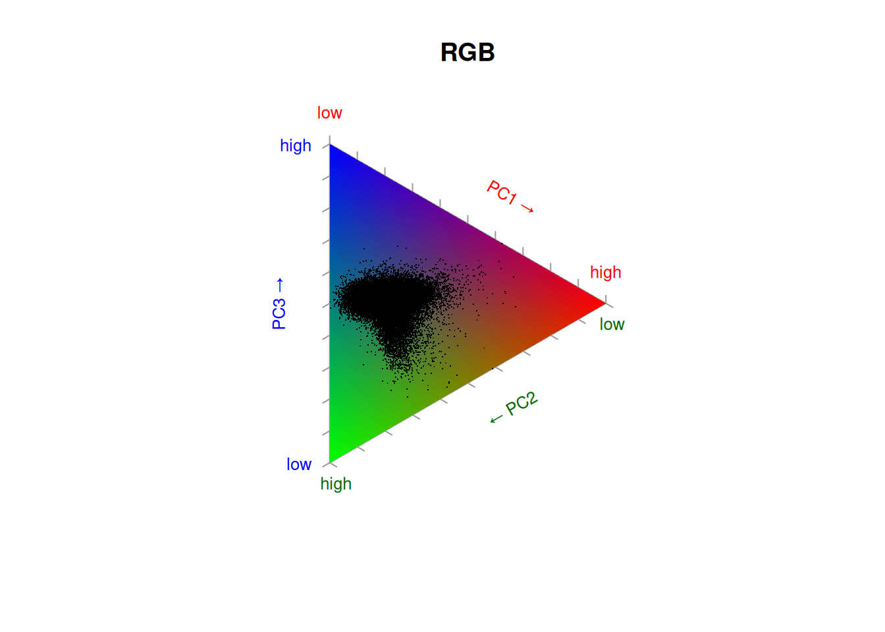
Code
# export
out <- cbind(
df[, c("NOM_M", "INSEE_COM", "INSEE_DEP", "INSEE_REG")],
indF,
pca1$li[, 1:3]
)
write.csv(
out,
file = file.path(out_folder, "PCA_commune.csv"),
row.names = FALSE
)
write.csv(
pca1$co[, 1:3],
file = file.path(out_folder, "PCA_loadings.csv"),
)